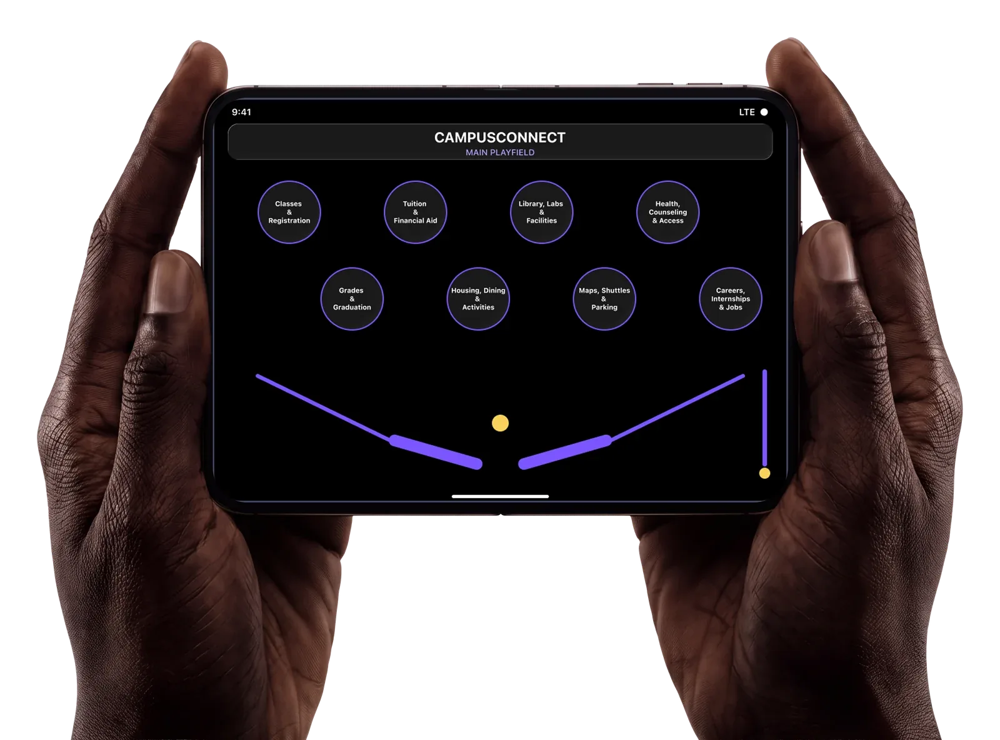
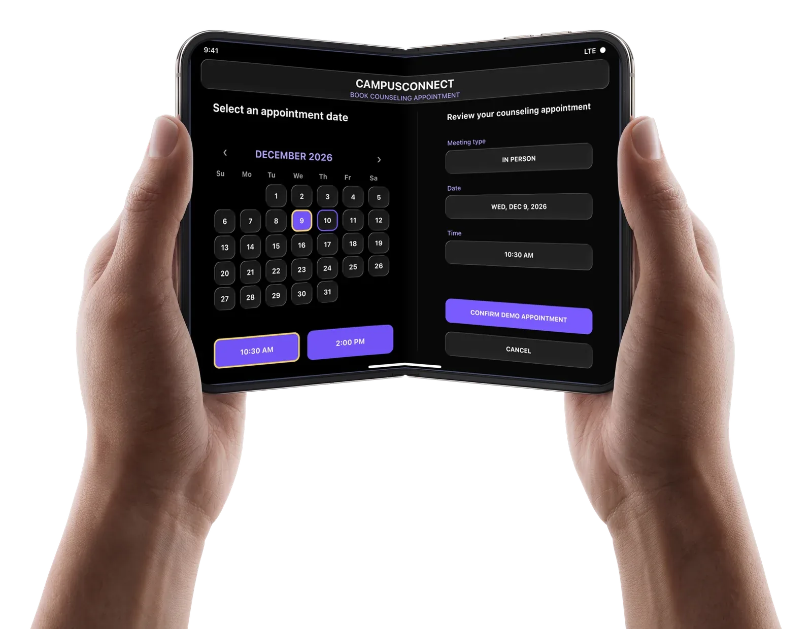

Surface hidden services
Put counseling, campus maps and other easy-to-miss services where students will run into them.
CASE STUDY / RADICAL DESIGN
Navigation you can play.
Campus apps hide most services three or four menus deep. CampusConnect swaps the menu for a pinball playfield: tap a target, shoot the ball at it, or drop it and see where it lands.
SEE THE JOURNEYS001 / OVERVIEW
A radical navigation redesign of a campus app that replaces the traditional menu with something that breaks the pattern on purpose. Each target on a pinball playfield is a group of services, with the same structure underneath.
Put counseling, campus maps and other easy-to-miss services where students will run into them.
Every playful mechanic sits next to a direct tap, so routine tasks never get slower.
The game is only for finding things. Grades, booking and maps look and work like a normal app.
PROBLEM
Campus apps list services the way the school is organized, not the way students think. Useful services end up several menus deep, so students who don’t already know they exist never find them.
HOW MIGHT WE
Make finding campus services fast for students who know what they want, and discoverable for students who don’t?
002 / THE PROBLEM
I ran everyday tasks through three kinds of navigation. In a traditional menu, registering for classes took four steps, and every one of them was a list.
TRADITIONAL
NON-TRADITIONAL
RADICAL
003 / STUDENTS
A commuter who knows exactly what they want, a first-year who doesn’t know what to look for, and a transfer student learning a new campus. The playfield has to work for all three.
“I check my grades in the parking lot before my shift. I don't have time to dig for them.”
“I didn't know counseling was free until halfway through the semester.”
“My first class is in Hale Hall, and I have no idea where that is.”
004 / CONCEPTS
A pinball playfield where each target is a category of student services. Hit a target to open it, then hit a service to unlock it.
Services stored as items in a briefcase inventory, inspired by Resident Evil 4. Open the case, inspect an item, use the service.
A seed for each category grows into a plant. Its branches are related services, and each flower opens one.
005 / WIREFRAMES
Stripped of color, each screen comes down to placement: what the thumb can reach, what the eye finds first, and what stays put between modes. These wireframes show that skeleton for the three ways to play and the screen they lead to.
006 / INTERACTION MODEL
All three sit on the same map of services. Chris taps, Emily plays, Ryan explores, and nobody is forced into the game.
007 / ITERATION
The first targets filled most of the playfield, so the ball had nowhere to travel. I shrank them, moved them and opened up space between them.
Shooting the ball for every task would make simple jobs harder. Direct tapping stays as the fast option.
Selecting a target used to jump straight to the next screen. A Target Hit transition now highlights the bumper first, so the hit feels like pinball.
008 / VISUAL LANGUAGE
Purple is the interface and the targets. Yellow is the ball and whatever is active, so your eye always knows where the action is.
009 / JOURNEYS
JOURNEY 1 / DIRECT TAP
No game needed. Tap Grades & Graduation, the bumper flashes, and the semester record opens. Done before the shift starts.
PATH
JOURNEY 2 / AIM & SHOOT
Playing around, she launches the ball at Health, Counseling & Access. From there it’s a normal calendar: pick a day, review, confirm.
PATH
JOURNEY 3 / PLINKO
Exploring before his first class, he drops the ball and lands on Maps. The campus map opens zoomed to Hale Hall, with a walking route from where he’s standing.
PATH
010 / UNFOLDED
Unfolded in landscape, booking fits on one screen: date and time on the left, review and confirm on the right. On a regular phone that’s three screens. The playfield also gets room to become a full pinball table.


011 / REFLECTION
Watch which of the three methods students pick for different tasks, and whether that changes after a week.
Check whether Aim & Shoot and Plinko lead students to services they didn’t know about.
Compare repeat tasks like checking grades against a standard menu, to find where the game gets in the way.